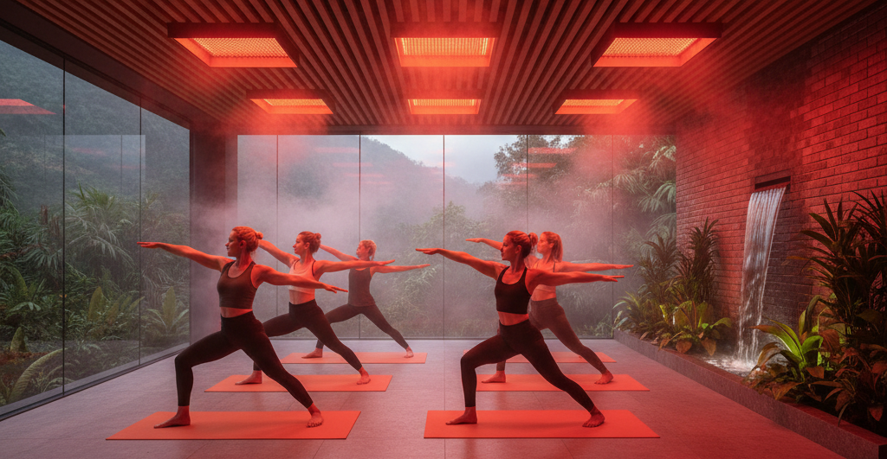
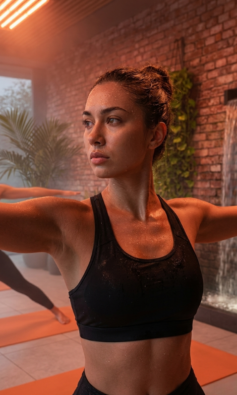
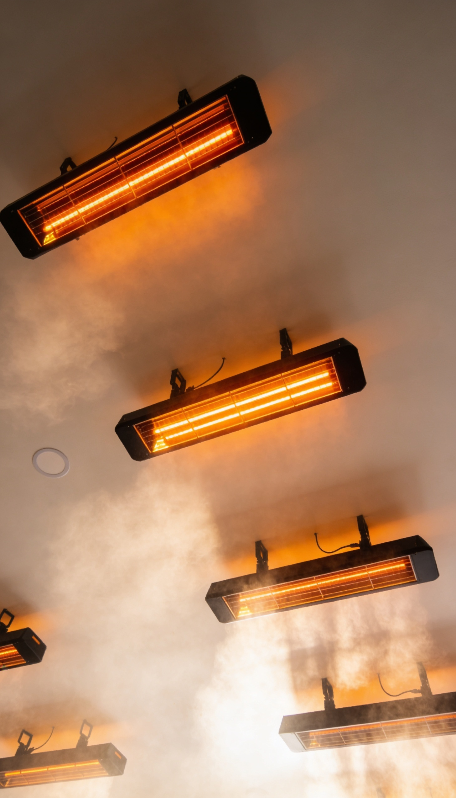
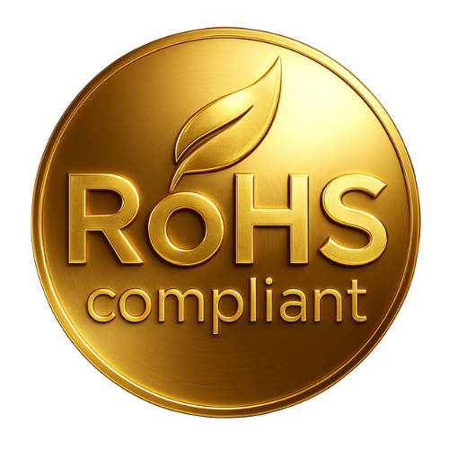
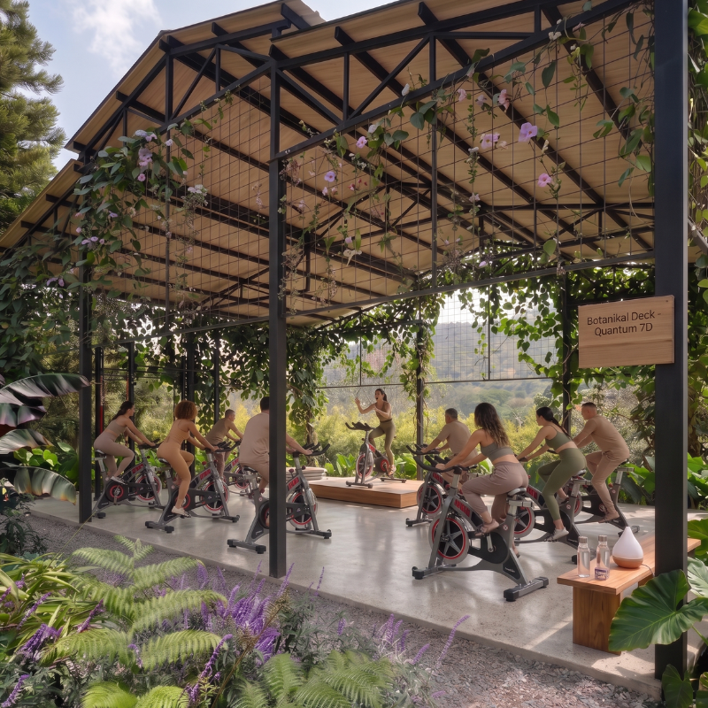
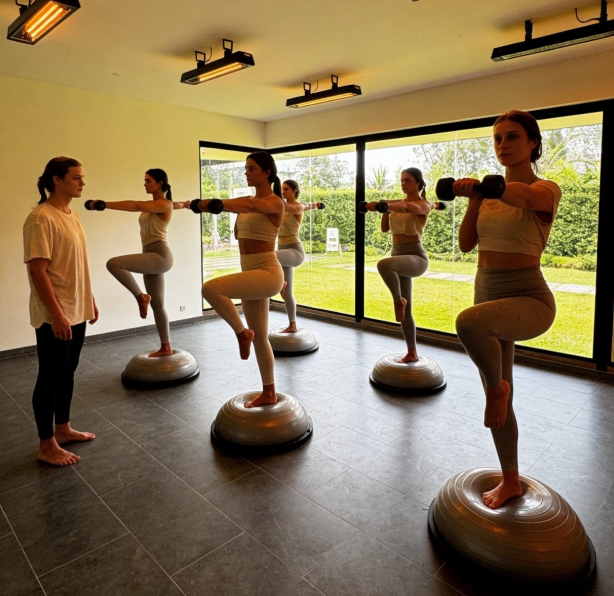
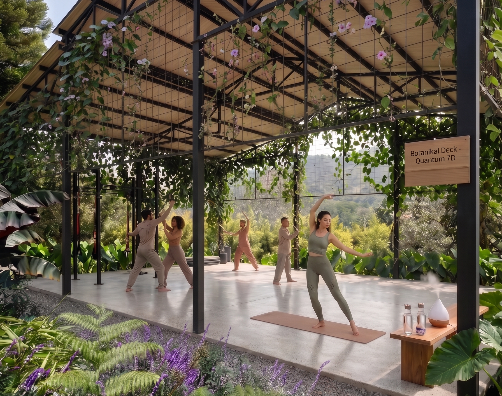
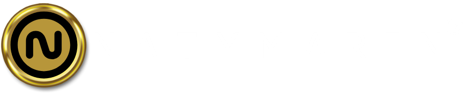

La Ciencia de la Unificación Interior
Entendemos el cuerpo no como una suma de partes, sino como un sistema de flujos energéticos y químicos en constante comunicación. La Sintergia es la respuesta a la fragmentación moderna: la unificación coherente y profunda del cuerpo, la mente y el espíritu para trascender las limitaciones de la realidad cotidiana.
Tu cuerpo es un sistema vivo de flujos energéticos y químicos en constante comunicación. La Sintergia devuelve su coherencia.
No somos seres aislados de nuestro ecosistema. El cerebro alcanza su máxima eficiencia sincronizado con los ritmos circadianos y la pureza del entorno.
Aplicamos el principio de la hormesis: estrés térmico controlado para despertar la resiliencia celular, activar el control hormonal y optimizar la función mitocondrial.
Cada sesión es una prescripción neurobiológica diseñada para reprogramar el sistema nervioso y generar un bienestar exponencial medible.
Guiarte hacia tu propia Sintergia. A través de la ingeniería biológica y la maestría del movimiento, te devolvemos el poder sobre tu propia biología. en un entorno donde te encuentras y te acompañas con la energía de más personas que comparten tu mismo propósito.
Por Natalia Marín, Fisioterapeuta y Máster en Neurociencias — Quantum 7D redefine el concepto de salud. El lujo se encuentra con la ciencia de vanguardia para ofrecer una metodología propietaria que unifica tu biología con tu entorno. No es solo movimiento; es la reprogramación de tu ser interior.

Cada sesión en Quantum 7D sigue una secuencia clínica diseñada para maximizar tu respuesta biológica en tres fases progresivas.
El salón de ingeniería térmica abre los canales de eliminación y prepara el tejido muscular con estrés térmico controlado. El cuerpo entra en estado de hormesis.
Stage 01 — Calor AmbientalLa tecnología infrarroja penetra hasta 4 cm en el tejido, activando la mitocondria, produciendo ATP y reduciendo la inflamación a nivel cuántico y celular.
Stage 02 — FotobiomodulaciónBotanikal Deck sella el proceso. Oxígeno puro de montaña, fitoncidas activos e iones negativos limpian el sistema y sellan la recuperación neurológica.
Stage 03 — Cámara Hiperbárica Natural
Ingeniería TérmicaUn músculo rígido genera resistencia al movimiento. El calor, aplicado con precisión, es un biocatalizador. En Quantum 7D cada grado está calculado para optimizar tu respuesta biológica — no para que sudes más, sino para que tus células reparen más.
Activa las Proteínas de Choque Térmico (HSP) para reparar tejidos y proteger tu sistema nervioso del estrés cotidiano.
El esfuerzo térmico aumenta el volumen plasmático y mejora el transporte de oxígeno a los músculos.
El calor transforma la viscosidad del tejido conectivo, permitiendo movimientos más profundos y seguros.
La temperatura elevada acelera la tasa metabólica basal y favorece la desintoxicación linfática por vasodilatación.
Modalidades: Movilidad — Pilates — Respiración Consciente — HIIT. Cada una bajo protocolos clínicos propietarios de Natalia Marín, MSc. en Neurociencias.
Mientras el calor ambiental actúa en la superficie, el infrarrojo de onda larga penetra hasta 4 cm dentro del tejido. No calienta el aire. Te calienta a ti — desde adentro. Es otra dimensión de la terapia térmica.
La misma tecnología utilizada en incubadoras médicas. Penetra profundo, activa la mitocondria y produce ATP — energía celular real.
El estímulo nace desde la base, permitiendo una distribución térmica uniforme que los paneles convencionales no pueden replicar.
Reduce inflamación, acelera recuperación muscular, renueva la piel y aumenta la producción natural de colágeno.

Far InfraredEn Quantum 7D la tecnología no es un accesorio — es un agente terapéutico. Nuestro estándar no es el mercado local, sino la regulación internacional de salud humana y ambiental.
Conformité Européenne — garantía de seguridad humana bajo las directivas más estrictas de la Unión Europea para dispositivos de contacto continuo.

RoHSLibre de plomo, mercurio y cadmio. El aire que respiras en cada sesión es 100% puro — protegiendo tu sistema endocrino en cada visita.
Federal Communications Commission — el estímulo infrarrojo es limpio y no genera interferencias en tu entorno bioeléctrico.
Nuestros sistemas de optimización infrarroja de piso emiten el estímulo desde la base, generando una distribución uniforme e inmersiva que los paneles convencionales no pueden replicar. Contamos con los Test Reports internacionales que respaldan cada certificado — el único centro en Colombia con este nivel de trazabilidad técnica en infrarrojo de piso.

Cámara Hiperbárica NaturalNo necesitamos encerrarte en una cámara. El Oriente Antioqueño es uno de los pocos lugares en Colombia donde se exporta aire al extranjero. Aquí, la naturaleza ya es hiperbárica. Cada inhalación es un protocolo de desinflamación celular.
A 2.100 msnm el cuerpo optimiza su eficiencia hematológica. Entrenar aquí mejora la capacidad de transporte de oxígeno de manera natural.
La vegetación emite compuestos orgánicos que activan las células NK (Natural Killers), fortaleciendo el sistema inmune con cada sesión.
El aire de montaña reduce el estrés oxidativo, mejora el estado de ánimo y contrarresta el impacto de la polución urbana y las pantallas.
Hemos eliminado la figura del instructor convencional para dar paso a los Health Curators. Un colectivo de expertos locales e internacionales seleccionados por su rigor científico y su capacidad de guiar el cuerpo hacia la Sintergia.
Acceso exclusivo a una red de especialistas en biomecánica, fisiatría y artes del bienestar. Residencias internacionales que traen a Colombia las últimas fronteras del movimiento.
Todo miembro del colectivo opera bajo nuestra metodología propietaria. El método es la ciencia que garantiza tu resultado — sin importar quién guíe la sesión.
Cada facilitador está certificado en la aplicación biológica de nuestra tecnología. Tu seguridad y progreso respaldados por evidencia clínica en cada sesión.
"En Quantum 7D, el maestro es el guía. Pero el Quantum Method es la ciencia que garantiza tu resultado. Sin importar quién dicte la sesión, el protocolo asegura que cada movimiento tenga un propósito biológico exacto."
Conocer el programa
The Collective of MasteryIngeniería Biológica de Alta Precisión
Bajo la dirección de Natalia Marín, cada protocolo en Quantum 7D está codificado para reprogramar tu sistema nervioso y hormonal en comunidad. No asistes a clases. Te integras a un protocolo de ingeniería biológica.
No solo entrenamos músculos. Entrenamos el sistema nervioso central para generar patrones de movimiento que trasciendan las limitaciones de la realidad cotidiana. El entorno es parte activa del protocolo.
Resultado: Claridad, foco y presencia sostenida.
El uso preciso del calor térmico e infrarrojo genera un estrés positivo que optimiza el control hormonal y la regeneración celular. Cada sesión activa los mecanismos de reparación más poderosos de tu biología.
Resultado: Regeneración profunda. Longevidad activa.
La unificación de cuerpo, mente y entorno se aborda desde la perspectiva científica. Buscamos una coherencia profunda que genere un Bienestar Exponencial medible en la salud de cada individuo.
Resultado: Bienestar exponencial. Medible. Real.

Ubicación Premium
Quantum 7D no está en cualquier lugar. Está donde el entorno amplifica cada sesión — Llanogrande, Oriente Antioqueño.
Montañas, bosques densos y jardines tropicales enmarcan cada sesión. La vista del Oriente Antioqueño es el primer estímulo de tu sistema nervioso antes de entrar al espacio.
A minutos del Aeropuerto Internacional José María Córdova. Un entorno que garantiza discreción total para nuestros usuarios, sin el ruido ni la exposición de los centros urbanos.
Llanogrande es la zona de mayor crecimiento y proyección premium de la región. El nuevo referente de lujo, bienestar y calidad de vida en Antioquia.
El aire puro y el microclima de montaña potencian cada sesión al aire libre en nuestro Botanikal Deck. La naturaleza no es decoración — es parte activa del protocolo de bienestar.
Parqueadero privado disponible para nuestros usuarios. En Quantum 7D, la experiencia comienza desde el momento en que llegas — sin estrés, sin fricciones.
Rodeado de los proyectos residenciales, clubes y servicios premium más destacados de Antioquia. Un contexto que refleja y refuerza el estándar de quienes eligen Quantum 7D.
Llanogrande, Oriente Antioqueño. No elegimos esta ubicación por conveniencia. La elegimos porque un ecosistema de bienestar real no puede existir rodeado de lo que genera el estrés que venimos a resolver.
Quiero conocer másSintergia Genesis
No son paquetes de sesiones. Son niveles de compromiso con tu biología. Cada protocolo está diseñado para un propósito específico dentro de tu proceso de Sintergia.
1 sesión
Una intervención biológica única de alto impacto. El primer encuentro con tu Sintergia — diseñado para quien quiere experimentar la transformación antes de comprometerse con un protocolo completo.
Iniciar4 sesiones / mes — 1 vez por semana
El mantenimiento de la coherencia biológica básica. Para quien ya comprende el valor del entorno y quiere sostener su estado de Sintergia de manera constante.
Iniciar8 sesiones / mes — 2 veces por semana
El estándar clínico para la reprogramación neurobiológica real. Dos encuentros semanales que permiten que el cuerpo establezca nuevos patrones de respuesta biológica de manera sostenida.
Iniciar16 sesiones / mes — 4 veces por semana
Optimización profunda de sistemas. Para quienes eligen hacer del Bienestar Exponencial su estándar de vida. El protocolo de mayor impacto en la transformación biológica integral.
IniciarNota importante: Cada protocolo tiene una vigencia máxima de un mes desde la fecha de adquisición. Los cupos no son reembolsables ni transferibles debido a la alta demanda del servicio y la naturaleza exclusiva de la experiencia. Al adquirir tu protocolo, aseguras tu lugar dentro de un sistema de bienestar diseñado para resultados reales.
Quantum 7D opera bajo un protocolo de convivencia diseñado para proteger la experiencia de cada usuario y la integridad del espacio.
Reserva previa obligatoria a través de la plataforma oficial. No se garantiza cupo sin reserva confirmada.
Al confirmar tu programación, el cupo se descuenta automáticamente del paquete. No se admiten cancelaciones posteriores.
Cancelación con menos de 4 semanas: cargo del 50%. Con menos de 7 días: cargo del 90%.
Cupos y paquetes no son reembolsables ni transferibles debido a la alta demanda del servicio.
Vigencia máxima de paquetes: 1 mes desde la fecha de adquisición.
Salón Infrarrojo: ingreso hasta 5 minutos después del inicio.
Espacio Terapéutico: ingreso hasta 5 minutos después del inicio.
Botanikal Deck (aire libre): ingreso hasta 10 minutos después del inicio.
Pasado el tiempo, el cupo podrá ser reasignado y la sesión se contabilizará como consumida.
Al finalizar la sesión, el usuario debe retirarse del salón o deck. Puede dirigirse a la zona común o café.
Digital Detox total: teléfonos celulares y laptops fuera de las instalaciones durante toda la sesión.
Prohibido el consumo de alcohol y tabaco dentro de las instalaciones y zonas del espacio.
No se permite el ingreso de mascotas ni acompañantes sin reserva confirmada.
Código de conducta: ambiente de silencio y respeto en todo momento. Conversaciones en tono bajo.
Prohibido el registro fotográfico o audiovisual sin autorización expresa de la dirección.
Protocolo de seguridad biológica — expandir para ver el listado completo
Condiciones Cardiovasculares
Neuropatías y Sensibilidad
Condiciones Vasculares
Otras Restricciones
Al completar el proceso de reserva, el usuario declara haber leído y aceptado íntegramente este reglamento, haber completado su ficha de antecedentes médicos de manera veraz, y conocer el Manual de Recomendaciones de Quantum 7D disponible en www.quantum7d.com. La participación implica la aceptación total de los Términos y Condiciones del servicio.
Preventa Exclusiva
La oportunidad de asegurar tu lugar comienza en
Lunes 1 de Junio, 2026 · 9:00 a.m. · Llanogrande, Antioquia
2026 All Rights Reserved. Design by 